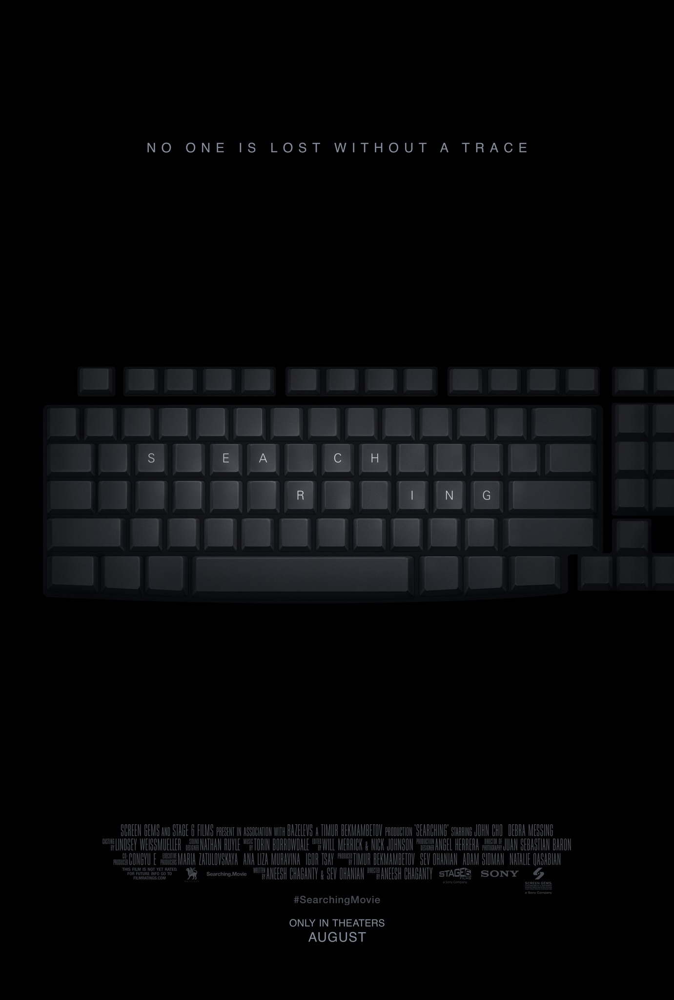

It has enough twists, turns, red herrings, chills and surprises to jangle the steadiest nerves, compelling characters and an unexpected degree of emotional power.

With clever and immersive storytelling, great performances, rich characterizations, surprising twists and ample amounts of food for thought, director Aneesh Chaganty has made a great feature debut with Searching.


影评：
故事本身讲得很好，情感和悬疑结合完美，铺垫好家庭背景之后所有发展都顺理成章又出人意料，换一个老爸能火眼金睛至此可能会显刻意。
非常新颖的表现形式，整个故事都在电脑屏幕上完成，节奏感把握得极好，多处反转出人意料，想起前面的铺垫又觉得顺理成章，悬疑的氛围持续到结束。
It has enough twists, turns, red herrings, chills and surprises to jangle the steadiest nerves, compelling characters and an unexpected degree of emotional power.
With clever and immersive storytelling, great performances, rich characterizations, surprising twists and ample amounts of food for thought, director Aneesh Chaganty has made a great feature debut with Searching.